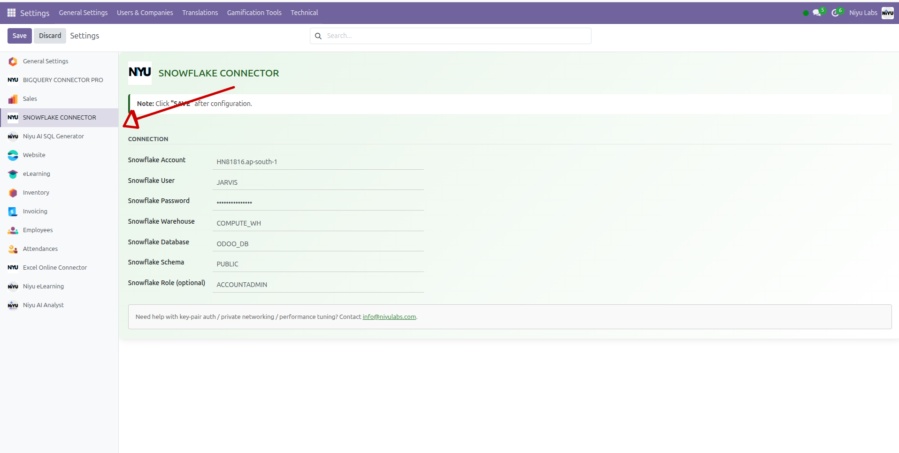
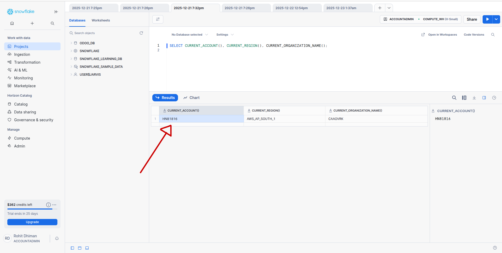
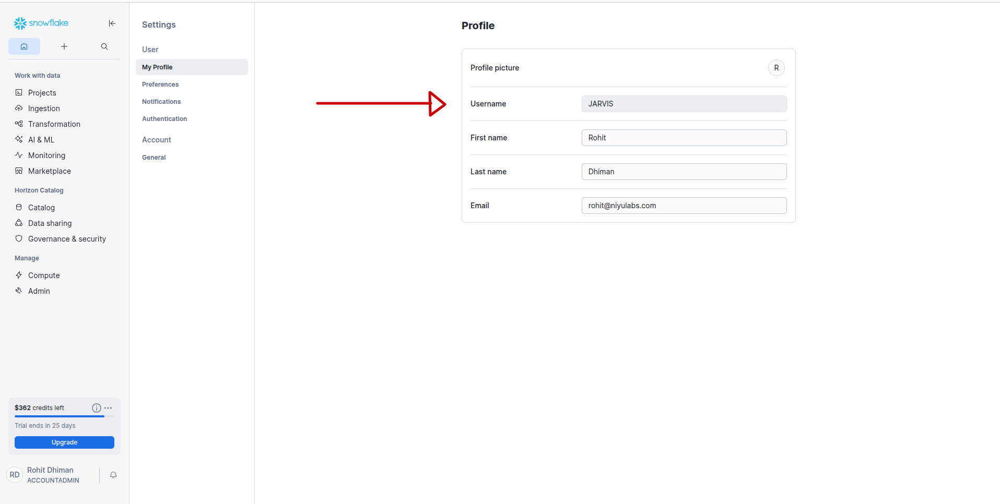
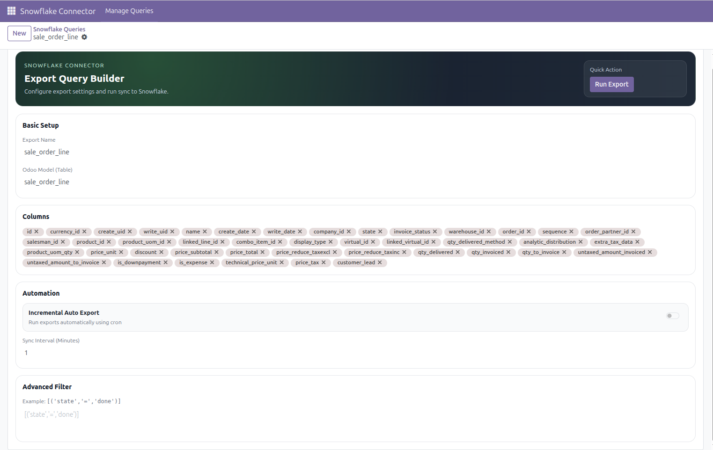
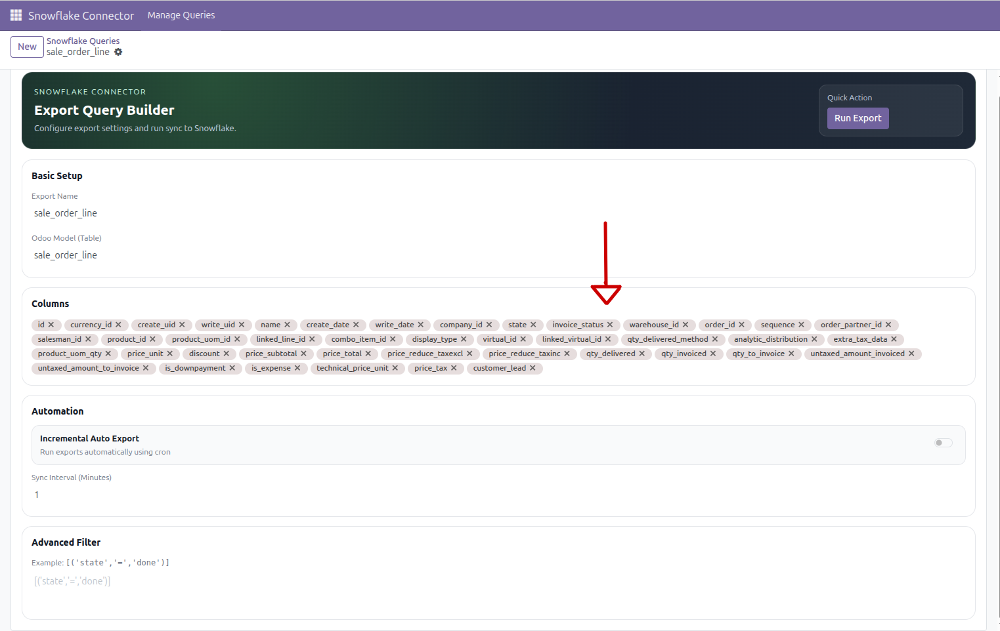
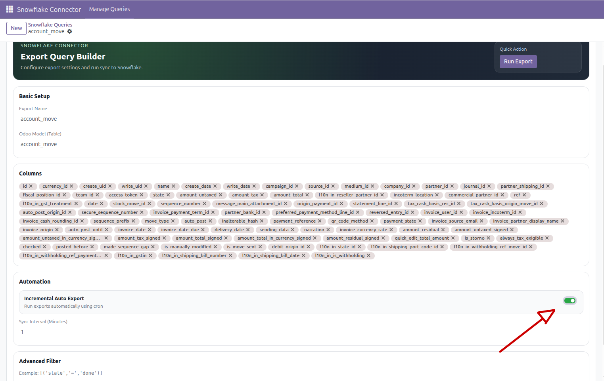
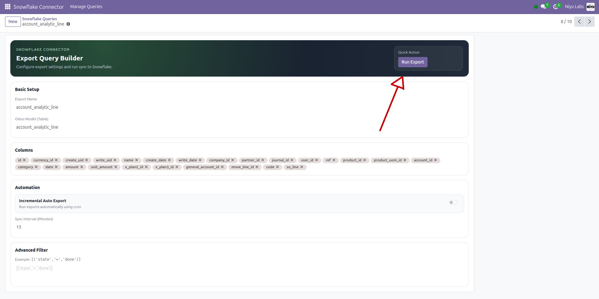
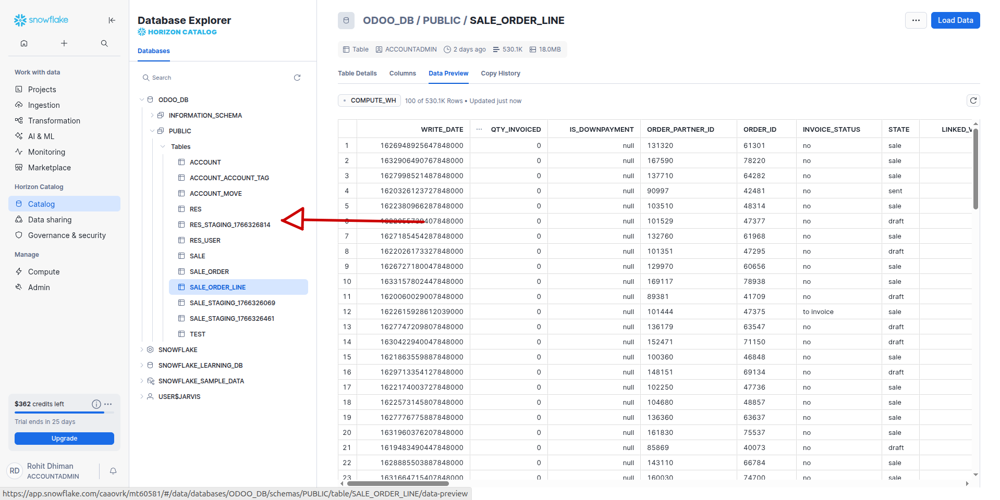
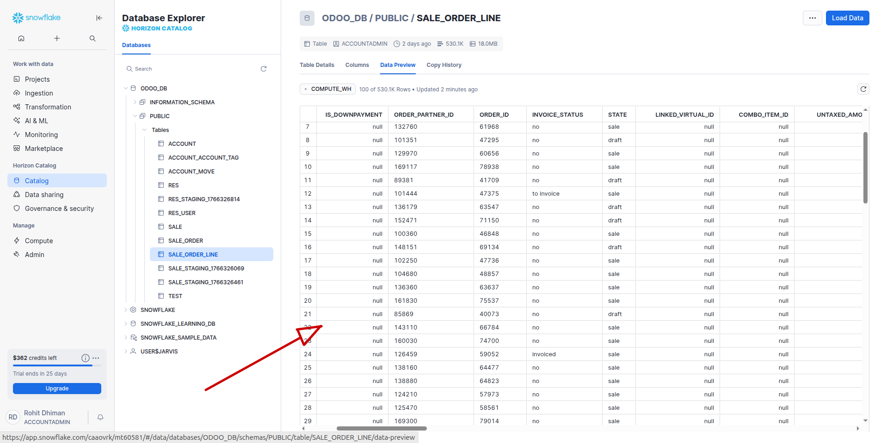
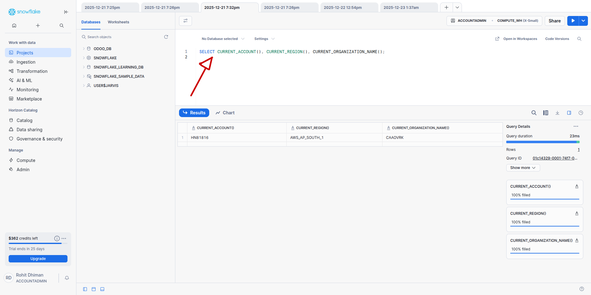

<!-- Bootstrap Utilities -->
<link rel="stylesheet" href="https://cdn.jsdelivr.net/npm/bootstrap@5.3.3/dist/css/bootstrap.min.css">

<!-- MAIN CONTAINER -->
<section style="
  background-color: #ffffff; 
  color: #1f2937; 
  font-family: 'Inter', -apple-system, BlinkMacSystemFont, 'Segoe UI', Roboto, sans-serif;
  line-height: 1.7; 
  margin: 0; 
  padding: 0;
  background-image:
    radial-gradient(circle at 90% -20%, rgba(59, 130, 246, 0.12), transparent 50%),
    radial-gradient(circle at -20% 30%, rgba(45, 212, 191, 0.08), transparent 50%);
">

  <!-- HERO SECTION -->
  <header style="padding: 120px 20px 80px 20px; text-align: center;">
    <div style=" margin: 0 auto;">
      <h1 style="font-size: clamp(3.5rem, 8vw, 5rem); line-height: 1.1; font-weight: 900; letter-spacing: -0.05em; margin: 0 0 30px 0; color: #0f172a;"> 
        <span style="background: linear-gradient(90deg, #3b82f6, #10b981); -webkit-background-clip: text; -webkit-text-fill-color: transparent;">Snowflake</span> Connector
      </h1>
      
      <p style="font-size: 1.35rem; color: #4b5563; max-width: 850px; margin: 0 auto 50px; line-height: 1.8;">
        This module helps you send your Odoo data to Snowflake. Think like this: <b>Odoo is your shop/office system</b>, and <b>Snowflake is a big &#8220;data notebook&#8221;</b> where you can do reports and charts.
      </p>


       <!-- Hero Video Showcase with 3D Hover Effect -->
      <div class="video-showcase-container" style="padding: 0 0 60px 0; ">
        <div style="max-width: 1300px; margin: 0 auto; padding: 0 20px;">
          <!-- Wrapper now applies the transition and base shadow, will-change property is crucial -->
          <div class="video-showcase-wrapper" style="border-radius: 2rem; padding: 5px; background-color:  rgba(64, 160, 255, 0.8) !important; box-shadow: 0 40px 100px -20px rgba(0,0,0,0.4) !important; position: relative !important; border: 1px solid rgba(255,255,255,0.4);">
            <video autoplay loop muted playsinline preload="auto" style="width: 100%; display: block; border-radius: 2rem; background-color: #eee;">
              <source src="./snowflakevideo.webm" type="video/webm">
              <!-- Fallback: Add your MP4 video here -->
              <source src="static/description/q1.mp4" type="video/mp4">
            </video>
          </div>
        </div>
      </div>


      <div class="d-flex flex-wrap justify-content-center gap-2 mb-5">
          <span style="background-color: #10b981; color: white; padding: 10px 24px; border-radius: 100px; font-weight: 700; font-size: 14px; box-shadow: 0 4px 15px rgba(16, 185, 129, 0.2);">Sync New Changes</span>
          <span style="background-color: #3b82f6; color: white; padding: 10px 24px; border-radius: 100px; font-weight: 700; font-size: 14px; box-shadow: 0 4px 15px rgba(59, 130, 246, 0.2);">Auto Create Tables</span>
          <span style="background-color: #1e293b; color: white; padding: 10px 24px; border-radius: 100px; font-weight: 700; font-size: 14px;">Update + Insert</span>
          <span style="background-color: #64748b; color: white; padding: 10px 24px; border-radius: 100px; font-weight: 700; font-size: 14px;">Auto Schedule</span>
      </div>

      <div style="background-color: #ffffff; border: 1px solid #e2e8f0; border-radius: 32px; padding: 40px; max-width: 850px; margin: 0 auto; box-shadow: 0 40px 100px -20px rgba(0,0,0,0.1);">
        <h5 style="font-weight: 800; color: #0f172a; margin-bottom: 15px;">&#10024; Super Simple Example:</h5>
        <p style="margin: 0; font-size: 1.15rem; color: #475569;">
          You export <b>Sales Orders</b> from Odoo &#8594; then you open Snowflake &#8594; and you can see the table &#8594; and build a chart like <b>&#8220;Sales this month&#8221;</b>.
        </p>
      </div>
    </div>
  </header>

  <!-- QUICK NAV -->
  <nav style="position: sticky; top: 0; z-index: 100; background-color: rgba(255,255,255,0.8); backdrop-filter: blur(12px); border-bottom: 1px solid #e2e8f0; padding: 15px 0;">
    <div class="container d-flex justify-content-center gap-3 flex-wrap">
      <a href="#what" style="text-decoration: none; color: #1e293b; font-weight: 700; font-size: 14px;">Benefits</a>
      <a href="#how" style="text-decoration: none; color: #1e293b; font-weight: 700; font-size: 14px;">How it Works</a>
      <a href="#setup" style="text-decoration: none; color: #1e293b; font-weight: 700; font-size: 14px;">Setup</a>
      <a href="#queries" style="text-decoration: none; color: #1e293b; font-weight: 700; font-size: 14px;">Create Export</a>
      <a href="#domain" style="text-decoration: none; color: #1e293b; font-weight: 700; font-size: 14px;">Filters</a>
      <a href="#incremental" style="text-decoration: none; color: #1e293b; font-weight: 700; font-size: 14px;">Auto Sync</a>
      <a href="#snowflake" style="text-decoration: none; color: #1e293b; font-weight: 700; font-size: 14px;">Check Snowflake</a>
      <a href="#troubleshoot" style="text-decoration: none; color: #dc2626; font-weight: 700; font-size: 14px;">Fix Problems</a>
    </div>
  </nav>

  <!-- WHAT IT DOES -->
  <section id="what" style="padding: 100px 0; background-color: #ffffff;">
    <div class="container">
      <div class="text-center mb-5">
        <h2 style="font-size: 42px; font-weight: 900; color: #0f172a;">What does this module do?</h2>
        <p style="color: #64748b; font-size: 1.25rem;">It connects Odoo to Snowflake so your data can live in both places for reporting.</p>
      </div>

      <div class="row g-4">
        <div class="col-md-6">
          <div style="background-color: #f8fafc; border: 1px solid #e2e8f0; border-radius: 24px; padding: 40px; height: 100%;">
            <h4 style="font-weight: 800; margin-bottom: 20px;">&#128640; Export Any Model</h4>
            <p class="mb-3">You can export many things, like:</p>
            <ul style="color: #4b5563;">
              <li>Sales Orders, Invoices, Customers</li>
              <li>Products, Inventory, and custom models</li>
            </ul>
          </div>
        </div>
        <div class="col-md-6">
          <div style="background-color: #f8fafc; border: 1px solid #e2e8f0; border-radius: 24px; padding: 40px; height: 100%;">
            <h4 style="font-weight: 800; margin-bottom: 20px;">&#128256; Export Only New Changes</h4>
            <p style="color: #4b5563;">It does not keep exporting the same old data again and again. New rows get exported, changed rows get updated. This is faster and saves Snowflake cost.</p>
          </div>
        </div>
        <div class="col-md-6">
          <div style="background-color: #f8fafc; border: 1px solid #e2e8f0; border-radius: 24px; padding: 40px; height: 100%;">
            <h4 style="font-weight: 800; margin-bottom: 20px;">&#9201; Auto Export (Schedule)</h4>
            <p style="color: #4b5563;">Choose a time like every 15 minutes. Odoo will export automatically. No manual clicks needed. Great for near real-time dashboards.</p>
          </div>
        </div>
        <div class="col-md-6">
          <div style="background-color: #f8fafc; border: 1px solid #e2e8f0; border-radius: 24px; padding: 40px; height: 100%;">
            <h4 style="font-weight: 800; margin-bottom: 20px;">&#10052; Safe Update in Snowflake</h4>
            <p style="color: #4b5563;">It will not create duplicate rows. If row already exists &#8594; update. If row is new &#8594; insert. This keeps the table clean.</p>
          </div>
        </div>
      </div>

      <div style="margin-top: 40px; padding: 40px; background-color: #eff6ff; border-radius: 24px; border: 1px solid #bfdbfe;">
        <h5 style="font-weight: 800; color: #1e40af;">Why do people use Snowflake?</h5>
        <p style="margin: 0; color: #1e40af;">Because Snowflake is great for analytics. It helps companies answer questions like: &#8220;How much did we sell this month?&#8221; &#8220;Which product sells the most?&#8221; &#8220;Who are our top customers?&#8221;</p>
      </div>
    </div>
  </section>

  <!-- HOW IT WORKS -->
  <section id="how" style="padding: 100px 0; background-color: #f8fafc; border-top: 1px solid #e2e8f0;">
    <div class="container">
      <div class="text-center mb-5">
        <h2 style="font-size: 36px; font-weight: 900;">How it works</h2>
        <p style="color: #64748b;">You don&#8217;t need to write SQL. Just follow these steps.</p>
      </div>

      <div class="row g-4 text-center mb-5">
        <div class="col-md-3">
          <div style="font-size: 40px; margin-bottom: 10px;">&#9881;</div>
          <h6 style="font-weight: 800;">1) Setup</h6>
          <p class="small text-muted">Add Snowflake details in Settings</p>
        </div>
        <div class="col-md-3">
          <div style="font-size: 40px; margin-bottom: 10px;">&#128196;</div>
          <h6 style="font-weight: 800;">2) Create Export</h6>
          <p class="small text-muted">Pick model and columns</p>
        </div>
        <div class="col-md-3">
          <div style="font-size: 40px; margin-bottom: 10px;">&#9654;</div>
          <h6 style="font-weight: 800;">3) Run / Auto Run</h6>
          <p class="small text-muted">Click Run or enable Auto Export</p>
        </div>
        <div class="col-md-3">
          <div style="font-size: 40px; margin-bottom: 10px;">&#128202;</div>
          <h6 style="font-weight: 800;">4) Check Data</h6>
          <p class="small text-muted">See your table in Snowflake</p>
        </div>
      </div>

      <div class="row g-4">
        <div class="col-md-6">
          <div style="background-color: #ffffff; padding: 35px; border-radius: 24px; border: 1px solid #e2e8f0; height: 100%;">
            <h6 style="font-weight: 800; margin-bottom: 15px;">What happens when you click Export?</h6>
            <ul class="small text-muted mb-0">
              <li style="margin-bottom: 8px;">Odoo reads data from your model</li>
              <li style="margin-bottom: 8px;">It sends data to Snowflake</li>
              <li style="margin-bottom: 8px;">Snowflake saves it as a table</li>
              <li>Next time, it sends only new/changed data</li>
            </ul>
          </div>
        </div>
        <div class="col-md-6">
          <div style="background-color: #ffffff; padding: 35px; border-radius: 24px; border: 1px solid #e2e8f0; height: 100%;">
            <h6 style="font-weight: 800; margin-bottom: 15px;">Good first export to test</h6>
            <p class="small text-muted">Start with a small model first, like Customers or Products. After it works, export bigger tables.</p>
            <div class="p-3 rounded-3 font-monospace" style="background-color: #f1f5f9; font-size: 13px; border: 1px solid #e2e8f0;">Example: res.partner or product.product</div>
          </div>
        </div>
      </div>
    </div>
  </section>

  <!-- STEP 1: SETUP -->
  <section id="setup" style="padding: 20px 0; background-color: #ffffff;">
    <div class="container d-flex flex-column align-items-center">
      <div style="width: 100%;">
        <span style="color: #3b82f6; font-weight: 900; font-size: 14px; text-transform: uppercase; letter-spacing: 1px;">Setup Connection</span>
        <h2 style="font-size: 42px; font-weight: 900; margin: 10px 0 30px;">Step 1: Snowflake Setup</h2>
        <p style="font-size: 1.15rem; color: #4b5563; margin-bottom: 40px;">Go to: <b>Settings &#8594; Snowflake Connector Pro</b></p>
        
        <div style="background-color: #f8fafc; border: 1px solid #e2e8f0; border-radius: 24px; padding: 40px; margin-bottom: 40px;">
          <h6 style="font-weight: 800; margin-bottom: 20px; font-size: 1.1rem;">Fill these fields:</h6>
          <ul style="list-style: none; padding: 0; font-size: 1.1rem;">
            <li style="margin-bottom: 10px;">&#183; <b>Account:</b> Your Snowflake Account ID</li>
            <li style="margin-bottom: 10px;">&#183; <b>User / Password:</b> Login credentials</li>
            <li style="margin-bottom: 10px;">&#183; <b>Warehouse:</b> e.g., <code>COMPUTE_WH</code></li>
            <li style="margin-bottom: 10px;">&#183; <b>Database / Schema:</b> Destination location</li>
            <li>&#183; <b>Role:</b> (Optional)</li>
          </ul>
        </div>

        <div style="margin: 40px 0; text-align: center;">
            <p style="font-weight: 700; color: #64748b; font-size: 14px; margin-bottom: 15px;">&#128247; Settings Screenshot</p>
            
        </div>

        <div style="padding: 40px; background-color: #0f172a; color: #ffffff; border-radius: 24px; box-shadow: 0 20px 40px rgba(0,0,0,0.2); margin: 40px 0;">
          <h6 style="font-weight: 800; color: #38bdf8; margin-bottom: 15px;">How to find your Account ID:</h6>
          <p class="small opacity-75 mb-3">In Snowflake, run this query in a worksheet:</p>
          <code style="color: #4ade80; display: block; background: #000; padding: 20px; border-radius: 12px; font-size: 14px; font-family: 'Fira Code', monospace;">SELECT CURRENT_ACCOUNT(), CURRENT_REGION(), CURRENT_ORGANIZATION_NAME();</code>
          <p class="small mt-3 opacity-75"><b>Account field entry:</b> Combine them as <code>ACCOUNT.REGION</code> (e.g., <code>HN81816.ap-south-1</code>)</p>
        </div>

        <div class="row g-4 mb-5">
            <div class="col-12">
                <p style="font-weight: 700; color: #64748b; font-size: 14px; margin-bottom: 15px; text-align: center;">&#128247; Finding Account query</p>
                
            </div>
            <div class="col-12 mt-5">
                <p style="font-weight: 700; color: #64748b; font-size: 14px; margin-bottom: 15px; text-align: center;">&#128247; Username location</p>
                
            </div>
        </div>

        <div style="padding: 35px; background-color: #f8fafc; border: 1px solid #e2e8f0; border-radius: 24px;">
          <h6 style="font-weight: 800; margin-bottom: 15px;">Simple meaning of Snowflake words:</h6>
          <div class="row g-3 small text-muted">
            <div class="col-md-6"><b>Warehouse:</b> The engine used to run work.</div>
            <div class="col-md-6"><b>Database:</b> Container for tables.</div>
            <div class="col-md-6"><b>Schema:</b> Folder inside the database.</div>
            <div class="col-md-6"><b>Role:</b> Permissions (what you can do).</div>
          </div>
        </div>

        <div style="margin-top: 30px; padding: 20px; background-color: #f0fdf4; border-radius: 16px; border: 1px solid #10b981;">
          <p style="margin:0; font-size: 15px; color: #166534;">&#9989; <b>Success Tip:</b> Ensure your Snowflake user can create tables. Ask your admin if you hit permission errors.</p>
        </div>
      </div>
    </div>
  </section>

  <!-- STEP 2: CREATE EXPORTS -->
  <section id="queries" style="padding: 20px 0; background-color: #f8fafc; border-top: 1px solid #e2e8f0;">
    <div class="container d-flex flex-column align-items-center">
      <div style=" width: 100%;">
        <div class="text-center mb-5">
            <span style="color: #3b82f6; font-weight: 900; font-size: 14px; text-transform: uppercase;">Step 02</span>
            <h2 style="font-size: 42px; font-weight: 900; margin-top: 10px;">Create an Export</h2>
            <p style="color: #64748b; font-size: 1.15rem;">This is where you choose what to send to Snowflake.</p>
        </div>

        <div style="background-color: white; border: 1px solid #e2e8f0; border-radius: 24px; padding: 40px; margin-bottom: 40px;">
          <h5 style="font-weight: 800; margin-bottom: 20px;">What is an Export?</h5>
          <p class="mb-4">It is like a saved &#8220;export button&#8221;. You can create many exports, one for each model you want.</p>
          
          <h6 style="font-weight: 800; margin-bottom: 15px;">Simple meaning of fields:</h6>
          <ul style="list-style: none; padding: 0;" class="text-muted">
            <li style="margin-bottom: 12px;">&#183; <b>Export Name:</b> Snowflake table name (e.g., <code>sale_order</code>).</li>
            <li style="margin-bottom: 12px;">&#183; <b>Odoo Model:</b> Which model to export.</li>
            <li style="margin-bottom: 12px;">&#183; <b>Columns:</b> Which fields you want.</li>
            <li style="margin-bottom: 12px;">&#183; <b>Auto Export:</b> Toggle automatic sync.</li>
            <li>&#183; <b>Interval:</b> Run frequency in minutes.</li>
          </ul>
        </div>

        <div style="margin: 40px 0; text-align: center;">
            <p style="font-weight: 700; color: #64748b; font-size: 14px; margin-bottom: 15px;">&#128247; Export Form</p>
            
        </div>

        <div style="padding: 30px 0;">
            <h6 style="font-weight: 800; font-size: 1.25rem;">What columns should you pick?</h6>
            <p style="color: #64748b;">Pick only columns you really need. This makes export faster. For sales: customer, date, total. For inventory: product, quantity.</p>
        </div>

        <div style="margin: 40px 0; text-align: center;">
            <p style="font-weight: 700; color: #64748b; font-size: 14px; margin-bottom: 15px;">&#128247; Selecting Columns</p>
            
        </div>

        <!-- DOMAIN SECTION -->
        <div id="domain" style="margin-top: 60px; padding: 50px; background-color: #ffffff; border-radius: 32px; border: 1px solid #e2e8f0; box-shadow: 0 10px 30px rgba(0,0,0,0.02);">
            <h3 style="font-weight: 900; margin-bottom: 20px;">Domain Filter <span style="font-weight: 400; color: #94a3b8;">(Optional)</span></h3>
            <p style="color: #64748b; margin-bottom: 30px;">A domain filter means: &#8220;export only some rows&#8221;. If you don&#8217;t add a filter, it exports everything.</p>
            
            <div class="row g-4">
            <div class="col-md-6">
                <div style="background-color: #f8fafc; padding: 30px; border-radius: 20px; border: 1px solid #e2e8f0; height: 100%;">
                <h6 style="font-weight: 800; margin-bottom: 15px;">Examples:</h6>
                <p class="small text-muted mb-1">Only confirmed Sales Orders:</p>
                <div style="background: #fff; padding: 12px; border: 1px solid #cbd5e1; font-family: monospace; border-radius: 10px; margin-bottom: 20px; font-size: 13px;">[('state','=','sale')]</div>
                <p class="small text-muted mb-1">Company 1 and amount > 1000:</p>
                <div style="background: #fff; padding: 12px; border: 1px solid #cbd5e1; font-family: monospace; border-radius: 10px; font-size: 13px;">[('company_id','=',1),('amount_total','&gt;',1000)]</div>
                </div>
            </div>
            <div class="col-md-6">
                <div style="background-color: #f8fafc; padding: 30px; border-radius: 20px; border: 1px solid #e2e8f0; height: 100%;">
                <h6 style="font-weight: 800; margin-bottom: 15px;">Tips for filters:</h6>
                <ul class="text-muted" style="font-size: 14px;">
                    <li style="margin-bottom: 10px;">Start without filter to verify connection.</li>
                    <li style="margin-bottom: 10px;">Use Odoo search list filters to test your logic.</li>
                    <li>Filters help keep Snowflake small and low cost.</li>
                </ul>
                </div>
            </div>
            </div>
        </div>

        <div style="margin-top: 40px; padding: 25px; background-color: #fffbeb; border-radius: 20px; border: 1px solid #fcd34d;">
          <h6 style="font-weight: 800; margin-bottom: 8px;">&#128203; Pre-Export Checklist:</h6>
          <p style="margin:0; font-size: 15px; color: #92400e;">Did you pick the model? Selected columns? Connection saved? If yes, click Run!</p>
        </div>
      </div>
    </div>
  </section>

  <!-- STEP 3: AUTOMATION -->
  <section id="incremental" style="padding: 20px 0; background-color: #ffffff;">
    <div class="container d-flex flex-column align-items-center">
      <div style=" width: 100%;">
        <div class="text-center mb-5">
            <span style="color: #3b82f6; font-weight: 900; font-size: 14px; text-transform: uppercase;">Step 03</span>
            <h2 style="font-size: 42px; font-weight: 900; margin-top: 10px;">Auto Export & Sync</h2>
            <p style="font-size: 1.15rem; color: #4b5563;">This helps Snowflake stay updated automatically without manual intervention.</p>
        </div>
        
        <div style="background-color: #f1f5f9; border-radius: 24px; padding: 40px; margin-bottom: 40px;">
          <h5 style="font-weight: 800; margin-bottom: 15px;">What is &#8220;incremental&#8221; sync?</h5>
          <p class="text-muted">It means: export only what is new or changed. Old rows are not re-sent, saving credits.</p>
          <hr style="opacity: 0.1; margin: 25px 0;">
          <h5 style="font-weight: 800; margin-bottom: 15px;">Interval Minutes:</h5>
          <p class="text-muted">How often auto export runs. Try 15 minutes for normal use, or 30-60 for huge databases.</p>
        </div>

        <div style="margin: 40px 0; text-align: center;">
            <p style="font-weight: 700; color: #64748b; font-size: 14px; margin-bottom: 15px;">&#128247; Automation Toggle</p>
            
        </div>

        <div style="margin: 40px 0; text-align: center;">
            <p style="font-weight: 700; color: #64748b; font-size: 14px; margin-bottom: 15px;">&#128247; Run Export Action</p>
            
        </div>
        
        <div style="margin-top: 40px; padding: 25px; background-color: #eff6ff; border-radius: 20px; border: 1px solid #3b82f6;">
          <p style="margin:0; font-size: 15px; color: #1e40af; text-align: center;">&#128161; <b>Manual Run:</b> You can always click &#8220;Run Export&#8221; manually even if auto-export is OFF.</p>
        </div>
      </div>
    </div>
  </section>

  <!-- STEP 4: VERIFY -->
  <section id="snowflake" style="padding: 20px 0; background-color: #f8fafc; border-top: 1px solid #e2e8f0;">
    <div class="container d-flex flex-column align-items-center">
      <div style=" width: 100%;">
        <div class="text-center mb-5">
            <span style="color: #3b82f6; font-weight: 900; font-size: 14px; text-transform: uppercase;">Step 04</span>
            <h2 style="font-size: 42px; font-weight: 900; margin-top: 10px;">Check Data in Snowflake</h2>
            <p style="color: #64748b; font-size: 1.15rem;">After export, you will see a new table in your Snowflake Warehouse.</p>
        </div>

        <div style="background-color: #ffffff; border: 1px solid #e2e8f0; border-radius: 24px; padding: 40px; box-shadow: 0 20px 50px rgba(0,0,0,0.05); margin-bottom: 40px;">
          <h5 style="font-weight: 800; margin-bottom: 20px;">Where is the data?</h5>
          <p class="text-muted mb-4">Table name is your Export Name. It is created automatically in your Database and Schema on the first run.</p>
          
          <div style="background-color: #0f172a; color: #fff; padding: 25px; border-radius: 16px; font-family: monospace; margin-bottom: 30px; font-size: 14px;">
            <span style="color: #38bdf8;">-- Success Check Query</span><br>
            SELECT COUNT(*) FROM ODOO_DB.PUBLIC.SALE_ORDER_LINE;
          </div>

          <h6 style="font-weight: 800; margin-bottom: 15px;">Simple Check via UI:</h6>
          <ul class="text-muted" style="padding-left: 20px;">
            <li style="margin-bottom: 10px;"><b>Database Preview:</b> Open Data &#8594; Databases, select your Table.</li>
            <li><b>Worksheets:</b> Run SELECT queries to see row data.</li>
          </ul>
        </div>

        <div style="margin: 40px 0; text-align: center;">
            <p style="font-weight: 700; color: #64748b; font-size: 14px; margin-bottom: 15px;">&#128247; Table List</p>
            
        </div>

        <div style="margin: 40px 0; text-align: center;">
            <p style="font-weight: 700; color: #64748b; font-size: 14px; margin-bottom: 15px;">&#128247; Database Preview</p>
            
        </div>

        <div style="margin: 40px 0; text-align: center;">
            <p style="font-weight: 700; color: #64748b; font-size: 14px; margin-bottom: 15px;">&#128247; Run Worksheet Query</p>
            
        </div>

        <div style="margin-top: 50px; padding: 40px; background-color: #ffffff; border-radius: 24px; border: 1px solid #e2e8f0;">
          <h6 style="font-weight: 800; margin-bottom: 15px;">What happens inside?</h6>
          <p class="text-muted mb-0" style="font-size: 15px;">The module sends data to a temporary table &#8594; updates the main table safely &#8594; deletes the temp table. Exporting again is safe; it only syncs changes.</p>
        </div>
      </div>
    </div>
  </section>

  <!-- TROUBLESHOOT -->
  <section id="troubleshoot" style="padding: 20px 0; background-color: #fff1f2; border-top: 1px solid #fecaca;">
    <div class="container d-flex flex-column align-items-center">
      <div style=" width: 100%;">
        <div class="text-center mb-5">
            <h2 style="font-size: 42px; font-weight: 900; color: #9f1239;">Fix Problems</h2>
            <p style="color: #be123c; font-size: 1.15rem;">Most problems are wrong settings or missing permissions.</p>
        </div>

        <div style="background-color: #ffffff; padding: 45px; border-radius: 32px; box-shadow: 0 20px 40px rgba(159,18,57,0.1); border: 1px solid #fecaca; margin-bottom: 50px;">
          <h6 style="font-weight: 800; margin-bottom: 25px; font-size: 1.2rem;">Checklist:</h6>
          <ul style="color: #4b5563; font-size: 1.1rem;">
            <li style="margin-bottom: 15px;">Account ID correct? (ID.REGION)</li>
            <li style="margin-bottom: 15px;">Warehouse/DB/Schema names match exactly?</li>
            <li style="margin-bottom: 15px;">Credentials (User/Pass) verified?</li>
            <li style="margin-bottom: 15px;">Permissions: User must be able to <b>CREATE TABLE</b> and <b>MERGE</b> data.</li>
          </ul>
          <div style="margin-top: 30px; padding: 25px; background-color: #fffbeb; border-radius: 20px; border: 1px solid #f59e0b;">
            <p style="margin:0; font-size: 15px; color: #92400e;">&#9888; <b>Important:</b> If you changed Snowflake table types before, you may need to delete the table once and re-export.</p>
          </div>
        </div>

        <!-- <div style="text-align: center;">
            <p style="font-weight: 700; color: #64748b; font-size: 14px; margin-bottom: 15px;">&#128247; Error Log Check</p>
            
        </div> -->
      </div>
    </div>
  </section>

  <!-- FAQ -->
  <section style="padding: 100px 0; background-color: #ffffff;">
    <div class="container">
      <div class="text-center mb-5">
        <h2 style="font-size: 42px; font-weight: 900;">FAQ</h2>
      </div>

      <div class="row g-4">
        <div class="col-md-4">
          <div style="background-color: #f8fafc; padding: 30px; border-radius: 24px; height: 100%; border: 1px solid #e2e8f0;">
            <h6 style="font-weight: 800;">Will it delete my data?</h6>
            <p class="small text-muted mb-0">No. It updates old rows and adds new rows safely.</p>
          </div>
        </div>
        <div class="col-md-4">
          <div style="background-color: #f8fafc; padding: 30px; border-radius: 24px; height: 100%; border: 1px solid #e2e8f0;">
            <h6 style="font-weight: 800;">Can it handle big data?</h6>
            <p class="small text-muted mb-0">Yes. It sends data in batches and only sends changes.</p>
          </div>
        </div>
        <div class="col-md-4">
          <div style="background-color: #f8fafc; padding: 30px; border-radius: 24px; height: 100%; border: 1px solid #e2e8f0;">
            <h6 style="font-weight: 800;">Works with custom models?</h6>
            <p class="small text-muted mb-0">Yes. Custom models are supported.</p>
          </div>
        </div>
        <div class="col-md-4">
          <div style="background-color: #f8fafc; padding: 30px; border-radius: 24px; height: 100%; border: 1px solid #e2e8f0;">
            <h6 style="font-weight: 800;">Do I need SQL?</h6>
            <p class="small text-muted mb-0">No. You just choose model and columns from the Odoo UI.</p>
          </div>
        </div>
        <div class="col-md-4">
          <div style="background-color: #f8fafc; padding: 30px; border-radius: 24px; height: 100%; border: 1px solid #e2e8f0;">
            <h6 style="font-weight: 800;">Can I stop auto export?</h6>
            <p class="small text-muted mb-0">Yes. Turn off the Auto Export toggle anytime.</p>
          </div>
        </div>
        <div class="col-md-4">
          <div style="background-color: #f8fafc; padding: 30px; border-radius: 24px; height: 100%; border: 1px solid #e2e8f0;">
            <h6 style="font-weight: 800;">Where are my tables?</h6>
            <p class="small text-muted mb-0">In Snowflake: Database &#8594; Schema &#8594; Tables.</p>
          </div>
        </div>
      </div>
    </div>
  </section>

  <!-- FOOTER -->
  <footer style="padding: 100px 0; text-align: center; background-color: #ffffff; border-top: 1px solid #e2e8f0;">
    <div class="container">
      <div style="background: linear-gradient(135deg, #0f172a 0%, #1e293b 100%); padding: 80px 40px; border-radius: 48px; box-shadow: 0 40px 100px -20px rgba(15,23,42,0.3);">
        <h2 style="font-size: 3.5rem; font-weight: 900; color: #ffffff; margin-bottom: 20px;">Need Help?</h2>
        <p style="font-size: 1.35rem; color: #94a3b8; margin-bottom: 50px; max-width: 700px; margin-left: auto; margin-right: auto;">Our team can assist with setup, mapping, and troubleshooting.</p>
        <div class="d-flex justify-content-center gap-5 flex-wrap fw-bold">
          <span style="font-size: 1.2rem; color: white;">&#128231; <a href="mailto:info@niyulabs.com" style="color: #38bdf8; text-decoration: none;">info@niyulabs.com</a></span>
          <span style="font-size: 1.2rem; color: white;">&#127760; <a href="https://niyulabs.com" style="color: #38bdf8; text-decoration: none;">niyulabs.com</a></span>
        </div>
      </div>
      <p style="margin-top: 60px; color: #94a3b8; font-weight: 600; font-size: 14px;">Last updated: December 2025 | Version: 18.0.2.1.0 | Odoo 16 &#183; 17 &#183; 18</p>
    </div>
  </footer>

</section>